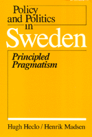

Exploring unique blend of innovation, conservatism, and qualities that define "The Swedish Way"
Exploring unique blend of innovation, conservatism, and qualities that define "The Swedish Way"


 Exploring unique blend of innovation, conservatism, and qualities that define "The Swedish Way"
Exploring unique blend of innovation, conservatism, and qualities that define "The Swedish Way"

|  |
Policy and Politics in SwedenPrincipled PragmatismHugh Heclo and Henrik Madsenpaper EAN: 978-0-87722-266-8 (ISBN: 0-87722-266-5) |
Sweden is a country of paradoxes. Renowned for its liberal social welfare programs and pluralistic cooperation, its government is also characterized by rigid and highly structured behavior. In this volume of the Policy and Politics series, Hugh Heclo and Henrik Madsen explore the contradictions that Sweden represents, its unique blend of innovation and conservatism, and the qualities that define "The Swedish Way."
In describing the workings of the Swedish government, several factors must be considered: social democratic hegemony, structured consultation, and corporate representation. Respectively these terms refer to the predominant leadership and ideology of the Social Democratic party, the ritualistic forms of representing all factions, and the organized representation of any social group with an individual interest. Heclo and Madsen examine what they call "The Swedish Way" and analyze how these attributes fit into policymaking behavior.
Characterizing the Swedes as intensely private, the authors contrast American emphasis upon individual achievement with Swedish approval of group-oriented behavior. That factor together with the ethnic and cultural homogeneity of the people reduces the potential for conflict in the political realm. The Swedes also typically adopt a problem-focused approach whenever dealing with public or private sector policy and administration. The practical result of pursuing the welfare vision by means of a problem-focused approach is that problems of collective choice—what the government should do to move Swedish society in the "right" direction—preoccupy the political system. Thus policymaking is in a state of constant adjustment. In this discussion of pioneering reforms, controlled conflict, and specific examples of policy formation and implementation, Heclo and Madsen explain the celebrated but paradoxical political system of Sweden.
Hugh Heclo is Professor of Government at Harvard University.
Henrik Madsen is a management consultant for McKinsey & Co., Copenhagen.
Political Science and Public Policy
Policy and Politics in Industrial States, edited by Douglas E. Ashford, Peter J. Katzenstein, and T.J. Pempel.
Each volume in Policy and Politics in Industrial States, edited by Douglas E. Ashford, Peter J. Katzenstein, and T.J. Pempel, is a sophisticated textbook that focuses on a single country but in a comparative policy context. Each consists of a balance of analysis and primary documents for six major issues. The issues include topics like economic policy, labor relations, social welfare, and the internal organization of the state.
© 2015 Temple University. All Rights Reserved. This page: http://www.temple.edu/tempress/titles/471_reg.html.